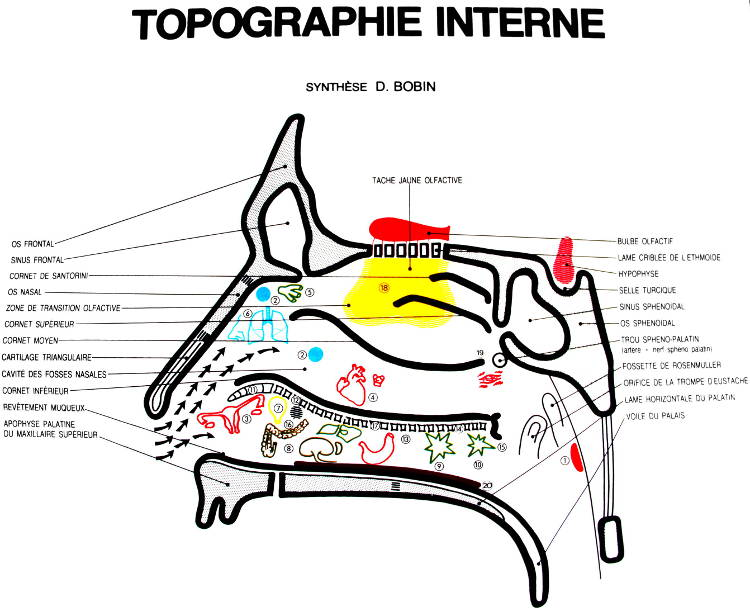

La sympathicothérapie est une technique utilisant les zones réflexes endonasales dans un but thérapeutique. Elle s’apparente aux autres méthodes réflexogènes telles que l’acupuncture, l’auriculothérapie et la podoréflexologie.
Cette méthode s’intègre parfaitement dans les thérapeutiques naturelles et permet des résultats rapides, sans aucun danger et sans réactions douloureuses.
La sympathicothérapie corrige les déséquilibres neurovégétatifs générateurs de maladies dites fonctionnelles, qui représentent la majorité des motifs de consultation.
La sympathicothérapie réalise le traitement d’élection de toutes pathologies liées au stress, et particulièrement :
Le nombre de séances peut varier de 1 à 12 suivant les cas cliniques. Les fréquences de traitement sont de 1 à 2 par semaine.
